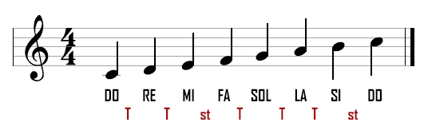
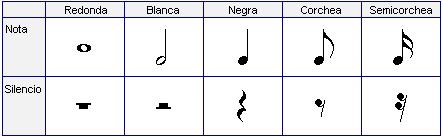

Intensidad
La intensidad del sonido se refiere a la cantidad de energía que transporta una onda sonora. Se mide en decibelios (dB) y está relacionada con la percepción de volumen. Cuanto mayor sea la intensidad, más fuerte se percibe el sonido.
Altura
La altura del sonido se refiere a la frecuencia de las ondas sonoras. Determina si el sonido es agudo o grave. Cuanto mayor sea la frecuencia, más agudo será el sonido.
Una familia de instrumentos es un conjunto de instrumentos musicales que comparten características comunes en dos aspect s principales:
El modo en que producen el sonido: Es decir, el mecanismo físico que genera la vibración (una cuerda, una columna de aire, una membrana, etc.).
Los materiales de construcción: Suelen estar fabricados con materiales similares (madera, metal, resinas).
A menudo, los instrumentos de una misma familia también guardan una relación de forma y diseño, variando principalmente en su tamaño para poder cubrir diferentes rangos de notas (desde los más agudos hasta los más graves).
El lenguaje musical es el sistema de signos, normas y símbolos que permiten que la música sea escrita, leída, comprendida y transmitida entre personas, sin importar su idioma nativo.
Al igual que un idioma tiene un alfabeto, palabras y reglas gramaticales para formar oraciones, el lenguaje musical tiene sus propios componentes para formar "discursos" sonoros.
Para entender este lenguaje, debemos mirar los cuatro elementos que los músicos utilizan para comunicarse:
¿Cómo se escribe este lenguaje?  Familia de Instrumentos
Familia de cuerdas
Familia de vientos
Familia de percusión
Lenguaje musical
Pilares del lenguaje musical
¿Cómo se escribe el lenguaje?